OCRs Website
Personal project to improve an existing website.

Overview
This is a personal project in which, as an obstacle course racing enthusiast, I decided to improve a website I found about this type of race.
Problem & Goals
The website had numerous shortcomings: no clear hierarchy, no pacing, lack of identity, excessive scrolling, hard to find upcoming races...
The main objective was to create a website that evoked emotions, improve navigation, create visual rhytm, create its own identity and encourage user participation.
Process
Research & Observation
As we can see in the images, the original website lacked structure, rhythm, and identity: the homepage was extremely long, the content was disorganized and unrelated to what should appear on a website's homepage, some of the content resembled advertising despite being part of the site, it was impossible to tell which part of the site had been accessed when changing pages, and there were many more problems easily detectable at a glance.
For this reason, I started making a list of all the problems and shortcomings I found while browsing the website.
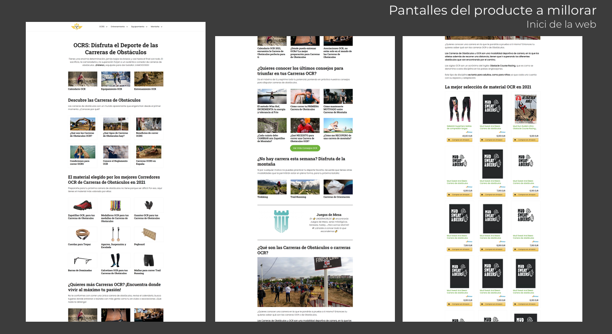
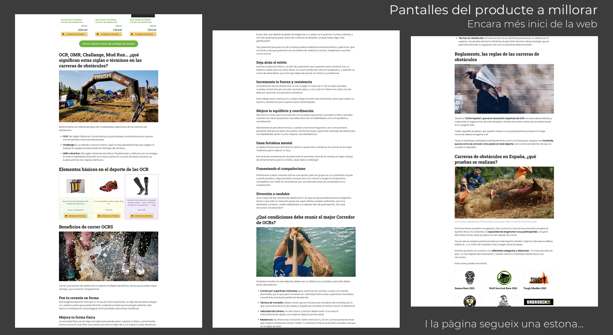
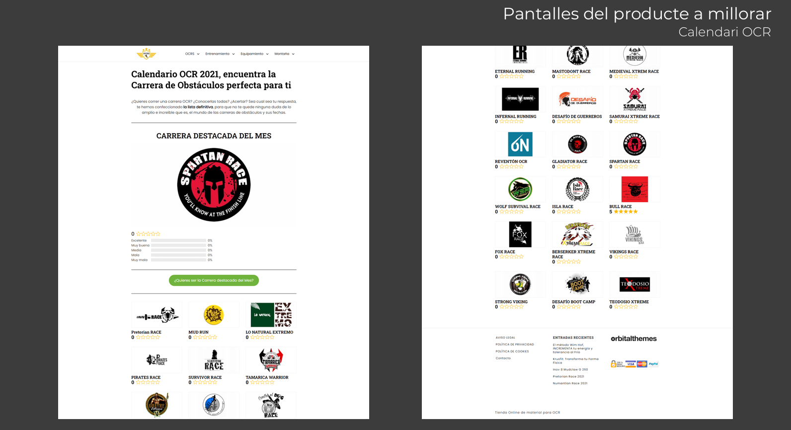
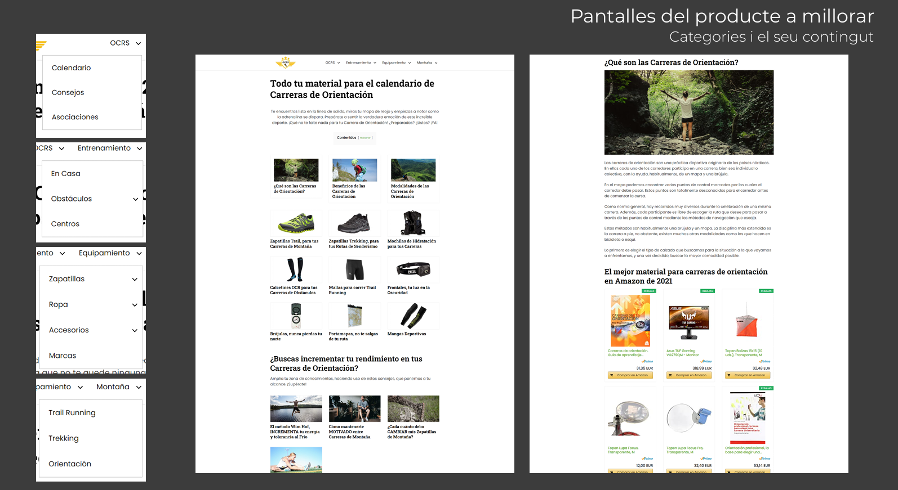
References & Moodboard
I started looking for references to help me create the aesthetic and content of the website I was going to rebuild. I found references on other websites related to obstacle course racing (OCR), as well as on other websites and elements of various kinds, such as videogames and superheroes.
Once I had a good number of references, I started creating a mood board to begin defining the website's aesthetic.
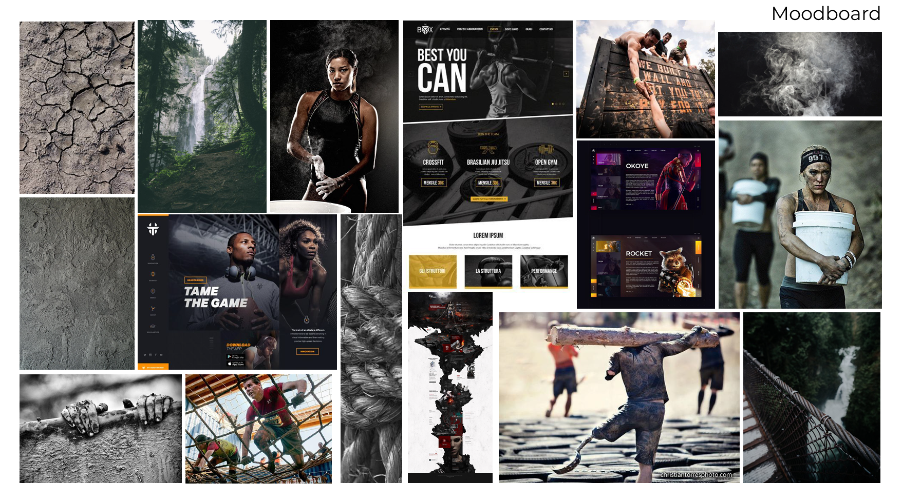
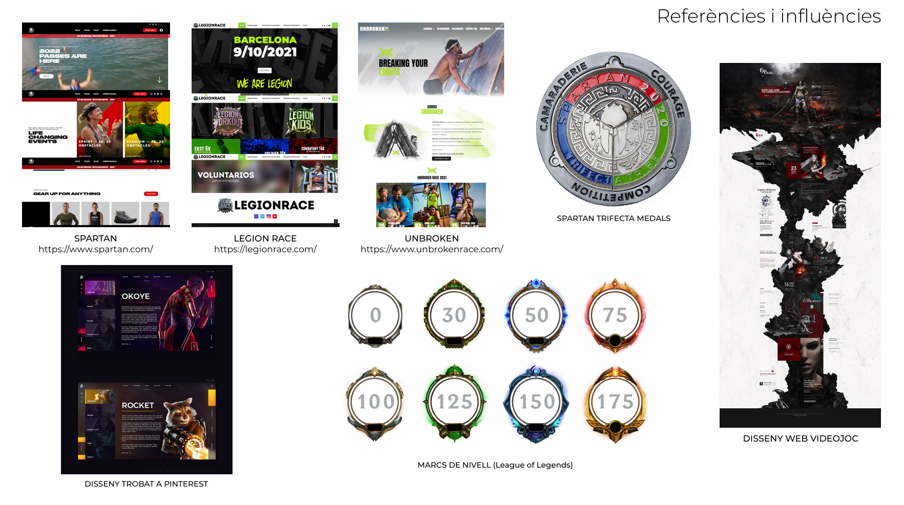
Navigation Tree
Before starting the website design, I created a navigation tree to decide what the content would be, how it would be divided, and how users would navigate within the website.
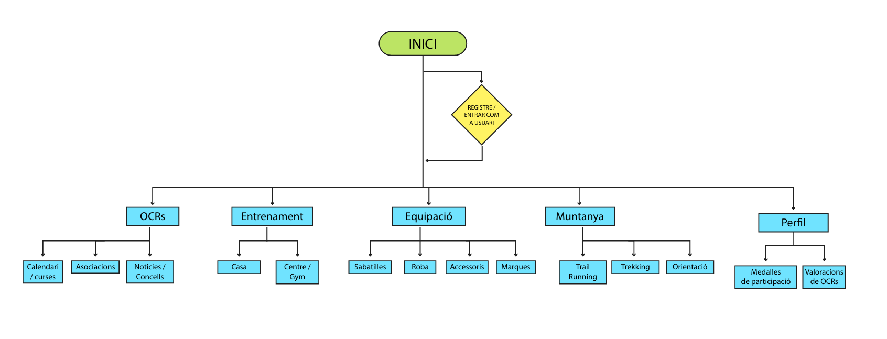
Grid
I was evaluating different grid layouts, and while the 12-column option initially seemed the most sensible, I ended up choosing the 6-column layout, as much of the content worked very well that way.
For example: 2x2 blocks (3 and 3 columns) for the homepage, 6 columns for the perfect placement of all the logos in the vertical carousel with upcoming races, and for the race details page, splitting it into two parts of 4 and 2 columns respectively worked very well for adding an image next to the descriptive text, and so on.
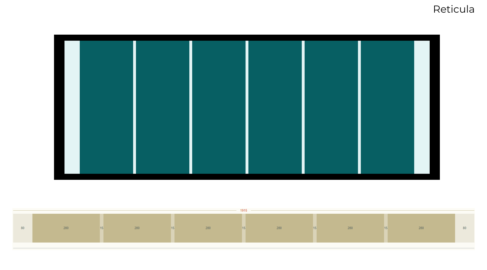
Wireframes
I started sketching the wireframes on paper with pencil and a couple of markers. Then I began digitizing them using Illustrator and did some tests with different structures.
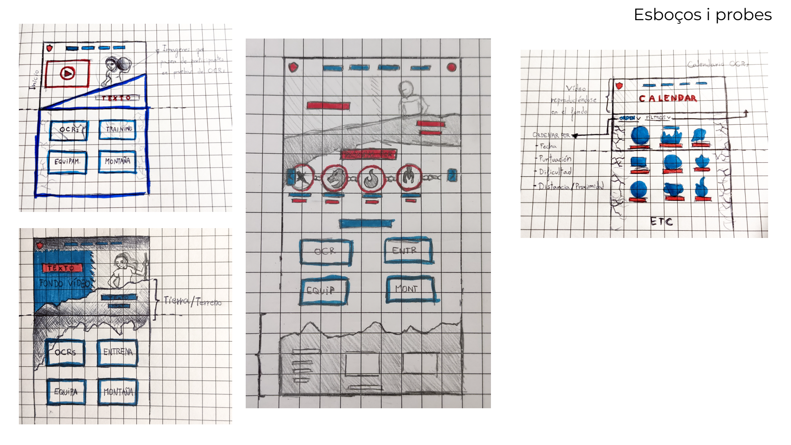
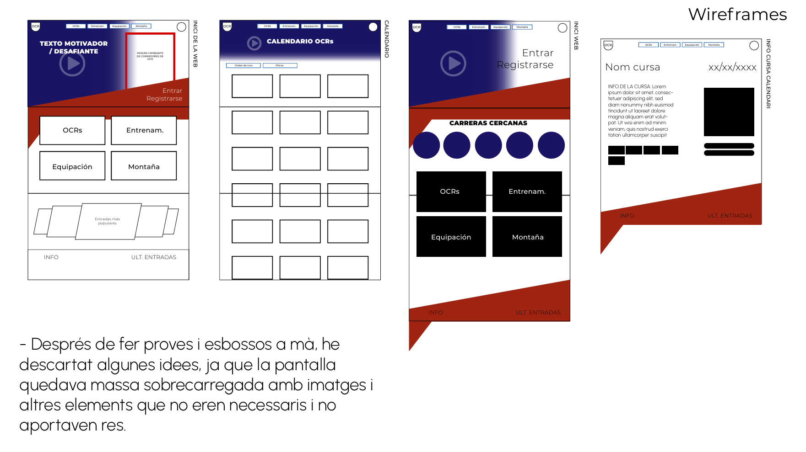
Color Palette & Typography
Thanks to the list of references and mood board created earlier, choosing the colors and typography wasn't too complicated, since the style was already quite defined.
One of the reasons I chose yellow as the accent color was because the site's original logo and some of the details on the original website were yellow, and it was a color that stood out very easily from the others.
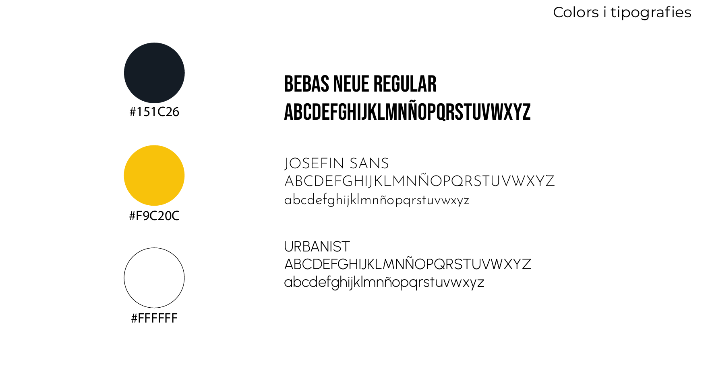
Photo Editing
The step prior to starting to shape the website was to edit with Photoshop a couple of photos that were going to be visual elements within the website and that were also going to be part of the identity of the site, contribute to the rhythm and appeal to the emotions of the user.
During the process of starting to create the final design of the website, we removed the element of the chains and kept the mountain, since this element, despite being related to the field of OCR, overloaded the areas where it was initially going to be placed.
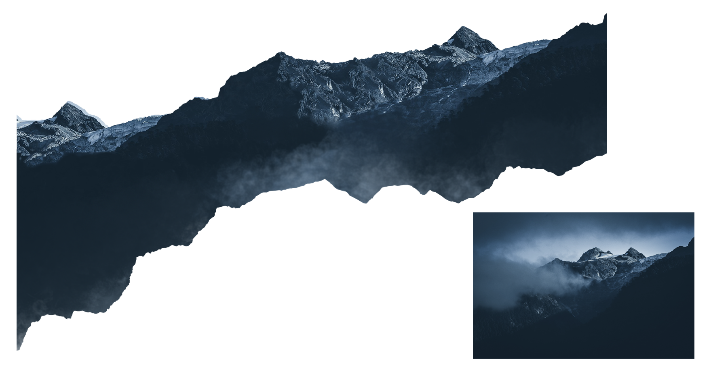
Gamification
To encourage users to create an account, interact, and create content within the website, and at the same time generate another way to appeal to emotions: I created a gamification system so that registered users who shared their activity in races and wrote opinions about the OCRs where they had participated, received experience to level up and unlock better profile frames and also received virtual medals.
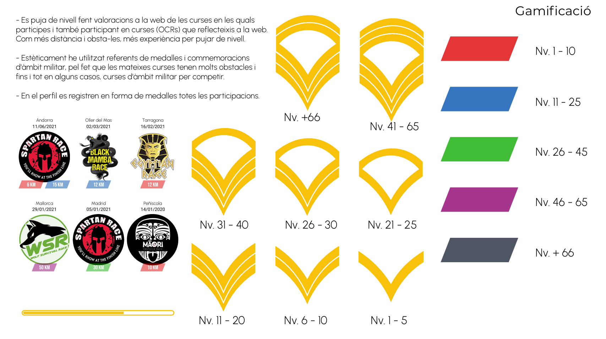
Final UI Design
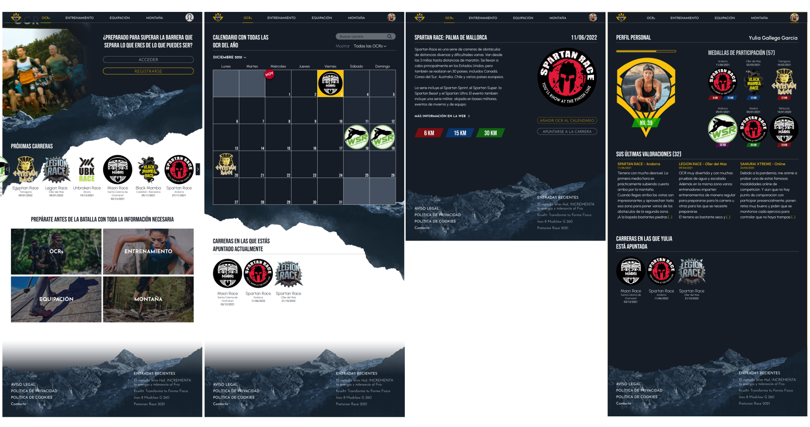
Final Outcome
Final design document: View design PDF
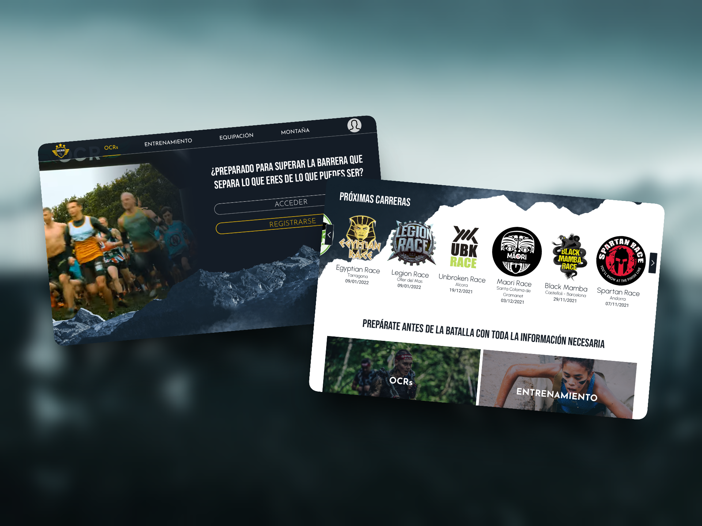
The final product is a website design that appeals to emotions from the very beginning: upon entering the site, the first thing you see in the hero section is race footage and the mountain with its texture, which is part of the website's aesthetic, also contributes to this effect.
The website now has a very clear and distinct identity, structured homepage with clearer hierarchy, improved navigation, gamification system, and a well-defined rhythm.
Reflection
If I were to continue this project, I would conduct usability testing with OCR participants to validate the navigation structure and evaluate whether the gamification system effectively motivates users to share race experiences.